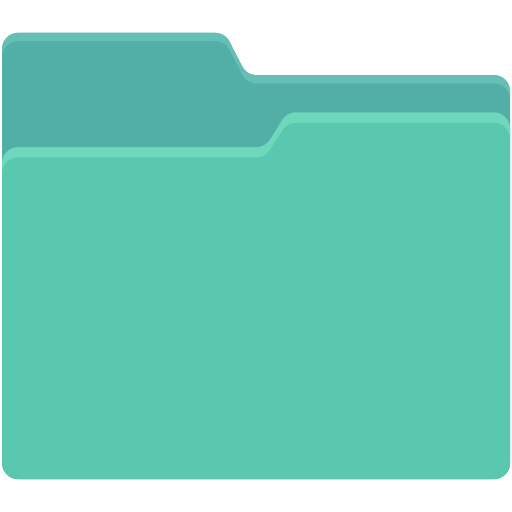

<body>
<header class="header">
    <nav id="menu-h">
      <a class="logo" href="/">Astro</a>
      <ul class="icone">
        <button class="menu">
          <svg
            xmlns="http://www.w3.org/2000/svg"
            width="35"
            height="30"
            fill="currentColor"
            class="bi bi-justify"
            style="padding: 0"
            viewBox="0 0 16 16"
          >
            <path
              fill-rule="evenodd"
              d="M2 12.5a.5.5 0 0 1 .5-.5h11a.5.5 0 0 1 0 1h-11a.5.5 0 0 1-.5-.5zm0-3a.5.5 0 0 1 .5-.5h11a.5.5 0 0 1 0 1h-11a.5.5 0 0 1-.5-.5zm0-3a.5.5 0 0 1 .5-.5h11a.5.5 0 0 1 0 1h-11a.5.5 0 0 1-.5-.5zm0-3a.5.5 0 0 1 .5-.5h11a.5.5 0 0 1 0 1h-11a.5.5 0 0 1-.5-.5z"
            />
          </svg>
        </button>
        <li><a href="/home">Inicio</a></li>
        <li><a href="/ferramentas">Ferramentas</a></li>
        <li><a href="">Meu perfil</a></li> 
      </ul>
    </nav>
  </header>

<main class="cards">
    <h1>Modelos pré-definidos</h1>
    <ul>
    <section class="card contact">
        <div class="icon">
            
        </div>
        <h3>Diário de bordo</h3>
        <span>Acesso a um modelo pré-definido de diário de bordo para a realização dos seus registros</span>
        <button class="buttonDiario"><a href="/diarioDeBordo">Abrir</a></button>
    </section>

    <section class="card contact">
      <div class="icon">
          
      </div>
      <h3>Plano de pesquisa</h3>
      <span>Acesso a um modelo pré-definido de Plano de pesquisa para a realização do seu trabalho academico</span>
      <button class="buttonDiario"><a href="/planoDePesquisa">Abrir</a></button>
  </section>

  <section class="card contact">
    <div class="icon">
        
    </div>
    <h3>Relatório de pesquisa</h3>
    <span>Acesso a um modelo pré-definido de Relatório de pesquisa para a realização do seu trabalho academico</span>
    <button class="buttonDiario"><a href="/diarioDeBordo">Abrir</a></button>
</section>
</ul>
</main>
</body>

